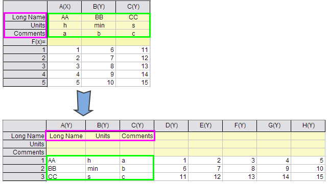

Arbeitsblätter transponieren
transpose-wks
Origin verfügt über ein Hilfsmittel zum Transponieren von Arbeitsblattdaten. Wenn das Arbeitsblatt mehr Zeilenwerte als Spalten enthält, fügt Origin während des Transponierens die notwendigen Spalten hinzu. Origin benennt die hinzugefügten Spalten alphabetisch und beginnt dabei mit dem ersten Buchstaben, der noch nicht als Spaltenname im Arbeitsblatt verwendet wird. Der Dialog wreducerows verwendet die X-Funktion wreducrows.
Zum Öffnen des Hilfsmittels:
- Aktivieren Sie die Arbeitsmappe.
- Klicken Sie auf Restrukturieren: Transponieren und öffnen Sie den Dialog wtranspose, der die X-Funktion wtranspose verwendet.
Um nur einen Teil des Arbeitsblatts zu transponieren, markieren Sie die Arbeitsblattzelle ganz links oben, bevor Sie den Dialog öffnen. Stellen Sie sicher, dass Aus der ausgewählten Zelle transponieren aktiviert ist, bevor Sie auf OK klicken.
|
Hinweis: Um die Spalten und Zeilen in Ihrem Arbeitsblatt transponieren zu können, müssen alle Spalten des Arbeitsblatts denselben Formattyp aufweisen. Jede der Spalten muss also beispielsweise auf Text & Numerisch oder Numerisch gesetzt sein. Das Spaltenformat wird in der Auswahlliste Format der einzelnen Spaltendialogfelder Eigenschaften (im Knoten Optionen) festgelegt. Klicken Sie doppelt auf die Spaltenüberschrift, um den Dialog Spalteneigenschaften zu öffnen. Im voreingestellten Origin-Arbeitsblatt ist jede Spalte auf Format = Text & Numerisch eingestellt.
|
Dialogoptionen
| Neuberechnen |
Die Neuberechnung der Ergebnisse wird festgelegt.
Weitere Informationen finden Sie unter Analyseergebnisse neu berechnen.
|
| Eingabearbeitsblatt |
Der Dateneingabebereich
Hilfe zum Festlegen von Bereichen finden Sie hier: Eingabedaten festlegen
|
| Aus der ausgewählten Zelle transponieren |
Diese Option ist nur verfügbar, wenn das Kontrollkästchen Beschriftung mit Daten austauschen deaktiviert ist. Sie wird verwendet, um nur einen Teil des Arbeitsblatts zu transponieren (dafür haben Sie die Zelle ganz oben links von dem zu transponierenden Teil markiert). Wenn sie aktiviert ist, werden die Zellen oberhalb oder links der ausgewählten Zelle nicht transponiert.
|
| Beschriftung mit Daten austauschen |
Diese Option ist nur verfügbar, wenn das Kontrollkästchen Aus der ausgewählten Zelle transponieren deaktiviert ist. Die in der Auswahlliste Beschriftungstyp ausgewählte Spaltenbeschriftungszeile wird mit der Datenspalte, die in der Auswahlliste Daten ausgewählt ist, ausgetauscht.
|
| Beschriftungstyp |
Diese Option ist nur verfügbar, wenn das Kontrollkästchen Beschriftung mit Daten austauschen aktiviert ist. Sie legt die Spaltenbeschriftungszeile fest, die mit der in der Auswahlliste Daten ausgewählten Datenspalte ausgetauscht wird.
- Es werden keine Beschriftungszeilen mit einer Datenspalte ausgetauscht.
- Austausch mit der Beschriftungszeile Langname
- Austausch mit der Beschriftungszeile Einheiten
- Austausch mit der Beschriftungszeile Kommentare
- Austausch mit der Beschriftungszeile Abtastrate
- Austausch mit der Beschriftungszeile Parameter
- Austausch mit der Beschriftungszeile des ersten benutzerdefinierten Parameters
- Alle Beschriftungszeilen
|
| Daten |
Diese Option ist nur verfügbar, wenn das Kontrollkästchen Beschriftung mit Daten austauschen aktiviert und für Beschriftungstyp etwas anderes als Kein ausgewählt ist. Die Datenspalte wird mit der in der Auswahlliste Beschriftungstyp ausgewählten Spaltenbeschriftungszeile ausgetauscht:
- Diese Option erstellt eine neue Spalte mit Y-Zuweisung ganz links im Arbeitsblatt und tauscht sie mit der ausgewählten Spaltenbeschriftungszeile aus.
- Diese Option tauscht die erste Datenspalte mit der ausgewählten Spaltenbeschriftungszeile mit X-Spaltenzuordnung aus. Der Beschriftungstyp kann nicht Abtastrate sein. Hinweis: Die am weitesten links befindliche Zelle der Spaltenbeschriftungszeile wird von dem Austausch ausgeschlossen.
|
| Leere Zeilen und Spalten am Ende entfernen |
Die leeren Zeilen und Spalten werden abgeschnitten.
|
| Ausgabearbeitsblatt |
Legen Sie den Ausgabebereich fest.
Hilfe zum Festlegen der Bereiche finden Sie unter: Ergebnisse ausgeben
|
 |
Wenn im Datensatz mehrere Beschriftungszeilen enthalten sind und Sie Alle in der Auswahlliste Beschriftungstyp und Neue Spalte in der Auswahlliste Daten ausgewählt haben, werden die Namen der Headerzeilen von der Quellspalte in Langname transponiert und die Spaltenheaderzeile wird in die neuen Spalten transponiert.

|